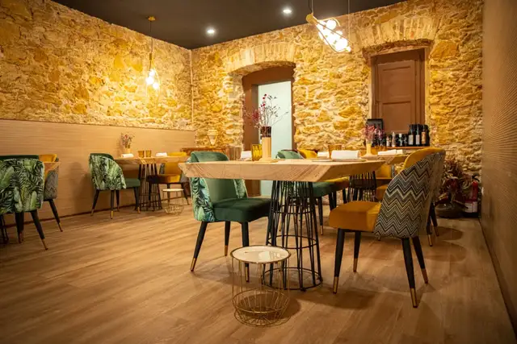
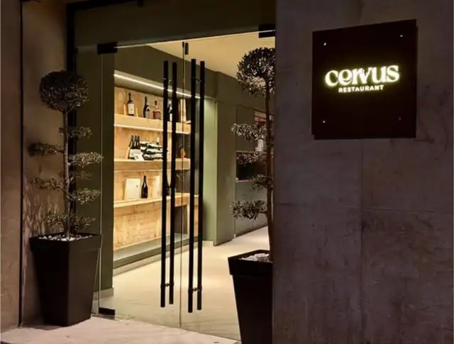
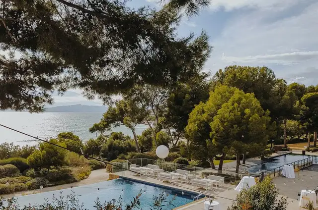
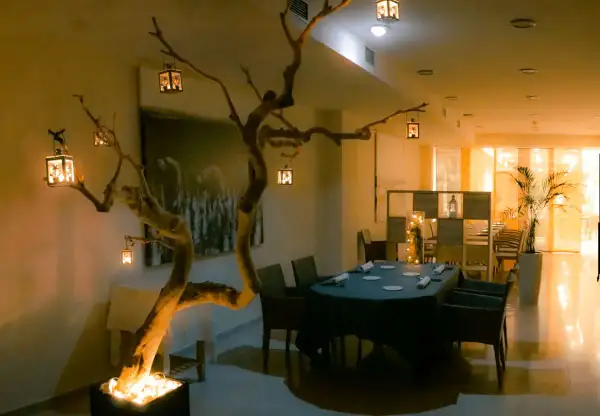
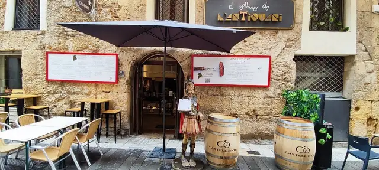

Visitado
01
El recorrido Gourmet
Ocho restaurantes por temporada, del Delta del Ebro a la Part Alta. De cada cena publicamos la crónica y el menú; al final del año, nuestros premios.
Temporada actual






Cierre de temporada
La Junta está cerrando la última cena de la temporada. La anunciaremos primero en la newsletter.
Geografía Gourmet
Todos los restaurantes visitados en las temporadas 2025 y 2026, situados en el territorio que nos define: el Camp de Tarragona y la Costa Daurada.
Historial
Trofeo Gastronia
Buidasacs Reus
Cambium Cambrils
Premio Bacus
Cirerets Mas Alta · Priorat
También en el recorrido
Estamos recuperando el archivo de las temporadas anteriores. ¿Guardas menús, fotos o crónicas de alguna cena? Escríbenos y lo añadiremos.